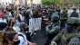

Upcoming EventsNo upcoming events.
|
international / miscellaneous / opinion / analysis Monday December 21, 2020 19:01 byStuart
The true meaning of Christmas. Christmas, the vast, commercialised festival of selling and consumption is upon us again. It’s supposedly a time of peace on earth and goodwill to all, but there is precious little peace on earth to be found, and very little goodwill for the working class.Christmas is a time of delusion when lots of us reflect that if we only had the spirit of Christmas all year round, and were kind, and nice, and generous to each other all the time, then all the world’s problems would be solved. This delusion fosters the idea that the troubles of capitalism are caused by the fact that people are bad and, if only people were better, then the world would be a better place too. In reality, people should be asking themselves why they behave as they do, and why the world is as it is. We need to realise that there is nothing essentially wrong with the vast majority of people. When we get a chance to relax, when we are given the time to try to live like sociable human beings, we enjoy ourselves. Perhaps, it is the fact that this is what a lot of people try to do at Christmas. Some, for a few days anyway, actually succeed, and they put it all down to the Christmas Spirit. The fact is though that it is the conditions of living and working under capitalism which largely make us who we are for the rest of the year. Tired out and bludgeoned into senselessness by dead-end, low paid bullshit jobs, with idiotic, bullying bosses on our backs; or struggling hopelessly below the poverty line on benefits, means there’s not much spirit left for goodwill, and no money for generosity. We just have enough energy to get through day to day. This outmoded and insane social and economic system ensures that poverty exists in the midst of plenty, and unaffordable slum housing, hunger, pollution, illness -both mental and physical, and destruction of the environment are the gifts we receive all year round. Anyone who preaches peace and goodwill without calling for an overthrow of capitalism have yet to demonstrate how these objectives can be realised, and are fooling themselves and trying to fool you. This longing for peace on earth and goodwill can only be fulfilled only through anarchism and a social system based on human needs, not profit. A social system that will see us working together, living together and loving together, not just for one day a year, but every day. So here is my gift to the ruling class this Christmas – the same gift I give them every day of the year – my hatred. To everyone else – the message of love and peace and sharing, the message of anarchism and solidarity. The fight for anarchism is the fight for peace on earth and goodwill to all. Merry Christmas to all the anarchists, dreamers, malcontents and misfits – let’s make it the last one under capitalism.
yunanistan / türkiye / kıbrıs / miscellaneous / feature Sunday December 20, 2020 21:16 byDevrimci Anarşist Faaliyet
İktidar Covid19 önlemleri adı altında ucu açık ve anlaşılmaz yasaklar açıkladı. Salgın süreci boyunca göstermelik önlemleri uygulayan iktidar gerçekçi önlemleri uygulamadı. Önlemleri fakir ve zengin yaşamını ayrıştırarak uyguladı. Bu ayrıştırma sadece ekonomik değildi, tarafı olduğu kültürel kesimleri kayırmasıyla sosyal bir ayrıştırmaya da dönüştü. Başkanın açıkladığı son salgın yasaklarında da bu açıkça ortadadır. Atölyelerde, fabrikalarda, inşaatlarda işçiler çalışıyorken patronlar izolasyonlarını sürdürmekteler. Kahvehaneler ve kıraathaneler kapanıyorken AVM’ler açık kalıyor, dip dibe yapılan ibadetler sürüyor. Bunlar bize, yapılan bu ayrıştırmayı apaçık göstermektedir. Bu yasakların Covid19 ile alakası yoktur. Yasaklar, krizle karşı karşıya kalan toplumun kontrolünü sağlamak ve krizi anlaşılamaz, algılanamaz kılarak saklama çabasının bir ürünüdür. [English]
Ελλάδα / Τουρκία / Κύπρος / Αναρχικό κίνημα / Γνώμη / Ανάλυση Sunday December 20, 2020 20:03 byΕλευθεριακή Πορεία
Μέσα στο κέλυφος του παλιού κόσμου δοκιμάζουμε τα περάσματα στην άλλη κοινωνία. Η επανάσταση δεν είναι μια στιγμή, δεν αρχίζει και δεν τελειώνει με την «επίθεση στα χειμερινά ανάκτορα». Η επανάσταση είναι ο μετασχηματισμός των κοινωνικών σχέσεων, μια διαδικασία με παλινωδίες και αντιφάσεις, πολλές φορές υπόγεια και υπόκωφη, άλλοτε ξέφρενη και θορυβώδης. Όμως έρχεται η στιγμή που το κέλυφος του παλιού κόσμου ή θα σπάσει ή με τη διαδικασία του μετασχηματισμού των κοινωνικών σχέσεων σε ασφυξία θα ανασυσταθεί, και η εξουσία θα εδραιωθεί εκ νέου – ακόμα και με άλλο προσωπείο. Για όσα δεν είναι πια και τόσο αυτονόητα«Θα γίνω γέλιο να κρυφτώ σε παιδιά που ξεφαντώνουν ο καιρός θα χάνεται ώσπου κάποιο απ' αυτά θα φωνάξει “Λιμπερτά”…» Μέσα σ' αυτό το ιδιότυπο καθεστώς του φόβου, της απομόνωσης, της επιτήρησης αλλά και της επίθεσης στα εργασιακά και κοινωνικά δικαιώματα, νιώθουμε την αναγκαιότητα για την ανασυγκρότηση των καταπονημένων δυνάμεων της κοινωνικής χειραφέτησης και την ανασύσταση του αιτήματος για τον ριζικό κοινωνικό μετασχηματισμό (λέγε με επανάσταση). Η αλήθεια είναι ότι δεν μπορούμε να φανταστούμε άλλον δρόμο για ένα τέτοιο ελευθεριακό πέρασμα παρά τη ριζοσπαστική πολιτική συλλογική πράξη, στην οποία θέλουμε να συνεισφέρουμε. Η πανδημία κυρίως υπό το πρίσμα της πολιτικής και ιδεολογικής της διαχείρισης δεν είναι ταξικά ουδέτερη: αποτελεί τόσο η ίδια όσο και οι συνέπειές της ένα πεδίο ταξικής αντιπαράθεσης σε όλο το εύρος της κοινωνικής ζωής. Το ζούμε καθημερινά αυτές τις μέρες: Στην αγωνία μας να μην καταρρεύσει το δημόσιο σύστημα υγείας. Στην οργή μας για την επίθεση που εξαπέλυσαν αφεντικά και κράτος απέναντι στα εργασιακά μας δικαιώματα. Στην αγανάκτησή μας για τις πολιτικές εξόντωσης «αυτών που περισσεύουν», των προσφύγων, των άστεγων, των φυλακισμένων, των φτωχών. Στην αγανάκτησή μας όμως και απέναντι σε εκείνα τα κομμάτια των μικροαστικών στρωμάτων, της εργατικής τάξης και των από κάτω γενικότερα που, διαβρωμένα από νεοφασιστικές, ρατσιστικές, μισογυνικές και ομοφοβικές αντιλήψεις, επιδίδονται σε πρακτικές κοινωνικού κανιβαλισμού διαφόρων μορφών και εντάσεων. Στην αμηχανία μας απέναντι στο καθεστώς ελέγχου, επιτήρησης και περιστολής των πολιτικών και κοινωνικών ελευθεριών, που επιχειρεί να εγκαταστήσει στο κοινωνικό σώμα ένα συνεχές τρόμου εκβιάζοντας την άνευ όρων υποταγή του. Στην επιθυμία μας για την αναγέννηση ενός αντικαπιταλιστικού-ελευθεριακού πολιτικού προτάγματος που απέναντι στα τραγικά και θανατηφόρα αδιέξοδα του σύγχρονου καπιταλισμού θα δίνει απαντήσεις, που θα μπορεί να περπατάει ρωτώντας και να ανοίγει περάσματα από το τώρα στο αύριο. Αυτή η προσπάθεια για τη συγκρότηση μιας ελευθεριακής πολιτικής συλλογικότητας δεν ξεκινά από το πουθενά ούτε και με το τίποτα: στα μπαγκάζια μας κουβαλάμε πολλούς και όμορφους στίχους· αυτοί όμως περιμένουν καινούργιες μουσικές για να τραγουδηθούν στο εδώ και στο τώρα, βάζοντας ερωτήσεις χωρίς να βιάζονται να δώσουν απαντήσεις – άλλωστε στις μέρες μας όποιος βαδίζει με ακλόνητες βεβαιότητες κινδυνεύει να βουλιάξει στην κινούμενη άμμο της ιδεολογίας και του λόγου που πέφτει σε τοίχους και γυρνάει πίσω κενός από νοήματα και ουσία. Μπαίνουμε σ’ αυτό το ταξίδι και τα πανιά μας τα φουσκώνουν οι αναρωτήσεις Μπορεί να υπάρξει αντικαπιταλιστικός αγώνας με ορίζοντα τον ριζοσπαστικό κοινωνικό μετασχηματισμό χωρίς να ανασυσταθεί σε πλατιά τμήματα της κοινωνίας ένα νέο κοινωνικό φαντασιακό που θα αμφισβητεί τον καπιταλιστικό μονόδρομο; Μπορούμε να αγωνιζόμαστε ενάντια στον καπιταλισμό χωρίς να μπορούμε να φανταστούμε/δημιουργούμε τη ζωή μετά από αυτόν; Όσο και να αντιλαμβανόμαστε την επιτακτικότητα του να τραβήξουμε το φρένο κινδύνου στο τρελό τρένο της προόδου, που αντιμετωπίζει κάθε ανθρώπινη δραστηριότητα αλλά και το φυσικό περιβάλλον ως πεδίο εκμετάλλευσης και κερδοφορίας και μας πουλάει την κατανάλωση ως αυτοπραγμάτωσή μας, έχουμε –έστω και σ’ εμβρυακή μορφή– σκεφτεί τις κοινωνικοπολιτικές πρακτικές που θα μπορούσαν να λειτουργήσουν προς αυτή την κατεύθυνση μέσα στις ιδιαίτερες συνθήκες της Ελλάδας; Έχοντας στις πλάτες μας όλο το συλλογικό βάρος του καπιταλισμού, ταυτόχρονα όμως τη μνήμη και την εμπειρία των αντιστάσεων σε αυτόν, είναι εφικτό να αναζητούμε μια νέα σχέση του ανθρώπου και της κοινωνίας με τη φύση, την επιστήμη, την τεχνολογία, που θα πηγαίνει πέρα από την εκμετάλλευση και την κυριαρχία ; Μπορούμε να δομήσουμε μεταξύ των ανθρώπων νέες σχέσεις που να υπερβαίνουν την κυριαρχία και την εκμετάλλευση; Καθώς όλα τα προηγούμενα χρόνια έχουμε δει τα όρια των πολιτικών συλλογικοτήτων οι οποίες βασίζονται στις ομάδες συγγένειας (affinity groups) ή στα συγκεντρωτικά – ιεραρχικά μοντέλα οργάνωσης, πώς θα μπορούσαμε να πειραματιστούμε σε μια νέα μορφή πολιτικής συλλογικότητας που να μη βασίζεται σε ιδεολογικοπολιτική ταύτιση; Πώς αυτή θα συγκροτούνταν έτσι, που το πολιτικό να μην απογειώνεται σε μιαν αφηρημένη πολιτική διάλεκτο και σε μια ψευδοδραστηριότητα και το προσωπικό να μην ευτελίζεται σε όργανο διαμεσολαβήσεων και παραγοντισμό; Πώς μπορεί να στηθεί ένα δίκτυο πολιτικών συλλογικοτήτων, το οποίο αφενός να διασφαλίζει την πολυμορφία και την αυτοτέλειά τους και αφετέρου να λειτουργεί ως σημείο αναφοράς του σύγχρονου ριζοσπαστισμού, ορατό στην κοινωνία και ικανό να εμπνεύσει ευρύτερες κοινωνικοπολιτικές διεργασίες και προτάγματα ανατροπής; Ποιες μορφές οργάνωσης, συλλογικής δράσης, συσσωμάτωσης των από τα κάτω αντιστοιχούν στην εποχή μας – εποχή της «κοινωνικής αποστασιοποίησης» και του διαδικτύου; Τι πρέπει να πετάξουμε και τι να επανεφεύρουμε, σε ποιες σειρήνες να αντισταθούμε και με τι να πειραματιστούμε; Πώς θα φτιάξουμε τα μεγάφωνα που να πολλαπλασιάσουν την ηχώ του λόγου μας, τους μεγεθυντικούς/πολυπρισματικούς φακούς μέσα από τους οποίους θα δούμε και θα μας δουν; Έχουμε ρίζες: ακουμπάνε βαθιά στα επαναστατικά κινήματα και στα ριζοσπαστικά ρεύματα του 19ου και του 20ου αιώνα. Τα κλαδιά μας όμως θα μπορούσαν να είναι το δημιουργικό τους ξεπέρασμα; Αν έχουν ειπωθεί τα πάντα, τότε ποιος μπορεί να είναι ο ρόλος της επαναστατικής θεωρίας και κριτικής σήμερα, πολύ περισσότερο που δεν θέλουμε να καταλήξει σε απολιθωμένα δόγματα και ανούσιες επαναλήψεις; Και το πολιτικό; Η δημοκρατία; Η αυτοθέσμιση; Η αυτοδιεύθυνση; Ο κομουνισμός; Η αναρχία; Η ελευθερία; Ο απεγκλωβισμός από την πατριαρχική συνθήκη και η χειραφέτηση των σεξουαλικών προσανατολισμών; Η ισότητα; Τα κοινά; Η οικολογία; Όλες αυτές οι λέξεις, που ξεπηδάνε μέσα από τα γραπτά μας και πνέουν θυελλωδώς στις συναντήσεις μας, τι πρακτική και υλική υπόσταση μπορούν να πάρουν; Μπορούμε να ασκήσουμε κριτική στις φιλελεύθερες πτυχές του δικαιωματισμού και των πολιτικών των ταυτοτήτων χωρίς να ξεπέσουμε σε έναν νεοσυντηρητισμό και χωρίς να κλείσουμε τα μάτια μας σε εκείνα τα πεδία καταπίεσης και εκμετάλλευσης που έγιναν ορατά ακριβώς χάρη σε αυτά τα πολύμορφα κινήματα; Μπορούμε, διευρύνοντας αυτές τις προβληματικές, να ξαναθέσουμε στο επίκεντρο της χειραφετητικής μας πολιτικής την έννοια της ελευθερίας του ενός ανθρώπου ως προϋπόθεση για την ελευθερία του άλλου; Οι φεμινισμοί, τα κινήματα με πρόσημο το έμφυλο, αυτά που εναντιώνονται στις φυλετικές και θρησκευτικές διακρίσεις μπορούν να αποτελέσουν κοινούς μας τόπους, ώστε να ξαναδούμε όλα αυτά τα ζητήματα και να δράσουμε ενάντια στις διακρίσεις; Μπορούμε να εμπλουτίσουμε το θεωρητικό μας οπλοστάσιο και να εφαρμόσουμε πρακτικές με στόχο την ισότητα της διαφορετικότητας αλλά και την υπέρβαση των διαχωρισμών; Πώς θα συνεχίσουμε να είμαστε ενεργά και δημιουργικά υποκείμενα μέσα στα κοινωνικά κινήματα, αναγνωρίζοντας συνάμα τα όρια και τις αντιφάσεις τους; Πώς θα μαχόμαστε χωρίς να αναλαμβάνουμε τον ρόλο της «πολιτικής πρωτοπορίας» αλλά και χωρίς να υποβαθμίζουμε την πρακτική μας σε ανέμπνευστη διεκπεραίωση; Πώς θα ξεπεράσουμε τη φετιχιστική ψευδαίσθηση του «αντικειμενικά επαναστατικού ρόλου» της εργατικής τάξης; Οι εργάτες δεν «προορίζονται» νομοτελειακά να αλλάξουν τον κόσμο ούτε έχουν την υποχρέωση να συμμορφώνονται με τις όποιες «αναπαραστάσεις» τους από τις «πολιτικές πρωτοπορίες». Σίγουρα κρατάμε τον ταξικό προσανατολισμό στις αναλύσεις και στη δράση μας με την έννοια της προτεραιότητας που έχει η απεύθυνση και η αναφορά μας στα καταπιεσμένα κοινωνικά στρώματα (τους εργάτες, τους άνεργους, τους υποαπασχολούμενους, τους πεταγμένους στο περιθώριο...). Ωστόσο υπάρχει άραγε άλλος δρόμος πέρα από τους ταξικούς αγώνες, ώστε οι εργάτες και όλοι οι καταπιεσμένοι και κοινωνικά απόκληροι να συγκροτήσουν ταξική συνείδηση και να γίνουν ανατρεπτικά/επαναστατικά υποκείμενα; Νιώθουμε την ανάγκη να εμπλακούμε εδώ και τώρα με μορφές οργάνωσης του ανθρώπινου πράττειν που θα θέτουν σε αμφισβήτηση τα όρια του καπιταλισμού, ακόμα κι αν λειτουργούν εντός του: μορφές οργάνωσης της παραγωγικής μας δραστηριότητας, των δομών αλληλεγγύης και κοινωνικής αναπαραγωγής, της δημιουργίας πολιτισμού αλλά και θεωρίας που, μολονότι εντός αυτού του κοινωνικού συστήματος, θα προσπαθούν να κινούνται τόσο ενάντια σ’ αυτό όσο και να συγκροτούν ένα πέρα από αυτό. Θα βρούμε το θάρρος να περπατήσουμε σ’ αυτούς τους «τόπους», όπου το νέο είναι περίπλοκα συνδεδεμένο με το παλιό, χωρίς να χαθούμε μέσα στις αντιφάσεις μας; Υπάρχουν τρόποι και δρόμοι να έρθουμε σε επαφή με τα στοιχήματα που έρχονται από ένα μέλλον – αυτό που περιμένει να το κατοικήσουμε, κι ας έχουμε στα πόδια μας τα βαρίδια ενός παρόντος που απειλεί να μας καταπιεί με την αυτοκαταστροφικότητα του; Αντέχουμε να κοιτάξουμε στο παρελθόν, όχι με το βλέμμα μας ακινητοποιημένο σε έναν ρομαντικό εξωραϊσμό του αλλά για να βρούμε θραύσματα και πολύτιμα υλικά από το μέλλον; Με τι κουράγια και από ποια απελπισία πρέπει να πιαστούμε για να κάνουμε αυτό το μέλλον όσο γίνεται περισσότερο παρόν; Μέσα στο κέλυφος του παλιού κόσμου δοκιμάζουμε τα περάσματα στην άλλη κοινωνία. Η επανάσταση δεν είναι μια στιγμή, δεν αρχίζει και δεν τελειώνει με την «επίθεση στα χειμερινά ανάκτορα». Η επανάσταση είναι ο μετασχηματισμός των κοινωνικών σχέσεων, μια διαδικασία με παλινωδίες και αντιφάσεις, πολλές φορές υπόγεια και υπόκωφη, άλλοτε ξέφρενη και θορυβώδης. Όμως έρχεται η στιγμή που το κέλυφος του παλιού κόσμου ή θα σπάσει ή με τη διαδικασία του μετασχηματισμού των κοινωνικών σχέσεων σε ασφυξία θα ανασυσταθεί, και η εξουσία θα εδραιωθεί εκ νέου – ακόμα και με άλλο προσωπείο. Μπορούμε να καλλιεργήσουμε εκείνη την πολιτική οξυδέρκεια, έτσι που να δουλεύουμε κάτω από το κέλυφος του παλιού κόσμου, χωρίς ωστόσο να ξεχάσουμε αυτό που μας μαθαίνουν οι αγώνες; Μπορούμε να έχουμε δηλαδή πάντα κατά νου πως είναι ανάγκη να αδράξουμε με καίριο τρόπο τη στιγμή που πρέπει να δοθεί ένα συμβολικό μα και αποφασιστικό τέλος στον παλιό κόσμο; Και με τις ερωτήσεις-άρμενα δικά μας τραβάμε σ’ ένα τραβέρσο κόντρα στον καιρό, σε μια ελευθεριακή πορεία. https://www.facebook.com/eleutheriakiporeia/
Ελλάδα / Τουρκία / Κύπρος / Λαϊκοί Αγώνες / Ανακοίνωση Τύπου Friday December 18, 2020 20:18 byΕΣΕ Αθήνας
Καλούμε όλες και όλους, να αντιδράσουμε και να αντισταθούμε σε αυτήν την βάρβαρη και απάνθρωπη πολιτική της κυβέρνησης, που αποτυπώνεται με τον χειρότερο τρόπο, στον κρατικό προϋπολογισμό που καταθέτει. Να προτάξουμε σαν αντίδοτο στην νοσηρή πραγματικότητα που ζούμε την αυτοοργάνωση των από κάτω, την συμμετοχή όλων μας στον ταξικό και κοινωνικό αγώνα και τη συγκρότηση ελευθεριακών μαχητικών σωματείων σε ανεξαρτησία από κράτος και κεφάλαιο στην κατεύθυνση της ρήξης με τον καθεστωτικό “συνδικαλισμό” των ΓΣΕΕ-ΑΔΕΔΥ και της δημιουργίας μιας τριτοβάθμιας συνομοσπονδίας εργασίας. Ο κρατικός προϋπολογισμός για το 2021 ισούται με απανθρωπιά και βαρβαρότηταΚαι ναι είναι γεγονός. Εν μέσω μίας παγκόσμιας πανδημίας και όπως είναι το φυσικό επόμενο μιας ραγδαίας παγκόσμιας οικονομικής ύφεσης, κατατέθηκε στο ελληνικό κοινοβούλιο από την κυβέρνηση, ο κρατικός προϋπολογισμός για το έτος 2021. Ένας προϋπολογισμός με έντονα ταξικά χαρακτηριστικά, όπως και των προηγούμενων κυβερνήσεων. Κάθε κοινή ανθρώπινη λογική, εν μέσω μίας τέτοιας δεινής συγκυρίας για όλη την ανθρωπότητα, θα προσδοκούσε έναν κρατικό προϋπολογισμό, που σαφώς θα ενίσχυε τις δομές δημόσιας υγείας, θα φρόντιζε να δαπανήσει κονδύλια για την προστασία της υγείας των πολιτών, θα μεριμνούσε ώστε να καλυφτεί η επιδότηση για τα ασθενέστερα κοινωνικά στρώματα και κάθε ευπαθή ομάδα της χώρας, επιπλέον θα προϋπολόγιζε την προστασία για τις υπάρχουσες θέσεις εργασίας και θα διέθετε δημόσιο χρήμα για την επιδότηση των ανέργων, που λόγο των υπαρχουσών συνθηκών ο αριθμός τους έχει αυξηθεί τραγικά. Όχι όμως. Ενάντια σε κάθε λογική η ακροδεξιά, νεοφιλελεύθερη κυβέρνηση της ΝΕΑΣ ΤΡΟΜΟΚΡΑΤΙΑΣ, που ως “σοβαρή Χρυσή Αυγή”, καταθέτει έναν κρατικό προϋπολογισμό στην ελληνική βουλή για το έτος 2021, ο οποίος κάθε άλλο παρά ανθρώπινος, υγειονομικός και προστατευτικός για τους πολίτες και τους εργαζόμενους/εργαζόμενες, είναι. Φροντίζει λοιπόν αυτή η κυβέρνηση, η οποία το τελευταίο διάστημα έχει ξεπεράσει κάθε όριο κρατικής βίας, αναίτιας καταστολής και απάνθρωπης αστυνόμευσης των πολιτών, να ενισχύσει με μεγάλα κονδύλια το κεφάλαιο, τους βιομηχάνους, τους εφοπλιστές, τους κλινικάρχες των ιδιωτικών κλινικών, τους καναλάρχες και κάθε λογής αφεντικό. Να ενισχύσει υλικά και έμψυχα τα σώματα ασφαλείας, να προσλάβει δηλαδή κι άλλους μπράβους φονιάδες μπάτσους, λες και αυτοί που υπάρχουν ήδη δεν είναι αρκετοί για να ματώνουν τις ζωές μας, να προσλάβει κι άλλους στρατιωτικούς και να επενδύσει σε εξοπλιστικά πολεμικά προγράμματα, για να υλοποιήσει τα σχέδια των παγκόσμιων ιμπεριαλιστών για να χυθεί κι άλλο από το αίμα των προλεταρίων. Και εκτός από όλα αυτά, κόβει κονδύλια από την δημόσια υγεία, καταργεί με την βάρβαρη και αντεργατική πολιτική της κάθε κερδισμένο με αιματοβαμμένο αγώνα εργασιακό δικαίωμα, στερεί έστω και τα πιο πενιχρά επιδόματα από τους ανέργους και τους εργαζόμενους/εργαζόμενες που έχουν τεθεί σε αναστολή και κάθε ανήμπορο άνθρωπο και ευπαθή ομάδα της χώρας. Καλούμε όλες και όλους, να αντιδράσουμε και να αντισταθούμε σε αυτήν την βάρβαρη και απάνθρωπη πολιτική της κυβέρνησης, που αποτυπώνεται με τον χειρότερο τρόπο, στον κρατικό προϋπολογισμό που καταθέτει. Να προτάξουμε σαν αντίδοτο στην νοσηρή πραγματικότητα που ζούμε την αυτοοργάνωση των από κάτω, την συμμετοχή όλων μας στον ταξικό και κοινωνικό αγώνα και τη συγκρότηση ελευθεριακών μαχητικών σωματείων σε ανεξαρτησία από κράτος και κεφάλαιο στην κατεύθυνση της ρήξης με τον καθεστωτικό “συνδικαλισμό” των ΓΣΕΕ-ΑΔΕΔΥ και της δημιουργίας μιας τριτοβάθμιας συνομοσπονδίας εργασίας. ΑΠΑΙΤΟΥΜΕ: - Αύξηση των δαπανών υγείας εδώ και τώρα για να σωθούν ζωές, και όχι μειώσεις όπως σχεδιάζεται στον προϋπολογισμό του 2021. - Άμεση και ουσιαστική επίταξη των δομών της ιδιωτικής υγείας πρωτοβάθμιας και δευτεροβάθμιας περίθαλψης, χωρίς αποζημίωση. – Σχεδιασμός συνολικός της πρωτοβάθμιας περίθαλψης, με τοπικά κέντρα covid-19, για αξιολόγηση και πρώτη αντιμετώπιση, για αποσυμφόρηση των νοσοκομείων. – Άμεση πρόσληψη προσωπικού, για να καλυφτούν, όσο είναι δυνατό οι κενές οργανικές θέσεις νοσηλευτικού και ιατρικού προσωπικού. – Έλεγχος και τεστ, σε όλους τους χώρους εργασίας. – Άμεση πρόσληψη προσωπικού, αγορά και δρομολόγηση νέων συρμών και λεωφορείων, αναβάθμιση εδώ και τώρα των ΜΜΜ. – Κάτω τα χέρια από τα εργατικά δικαιώματα και τις δημοκρατικές ελευθερίες μας. - Απόσυρση του αντισυνδικαλιστικού/αντεργατικού νόμου. Ελευθεριακή Συνδικαλιστική Ένωση Αθήνας *Σχετικός σύνδεσμος: https://ese.espiv.net/2020/12/16/o-kratikos-proypologismos-gia-to-2021-isoytai-me-apanthropia-kai-varvarotita/?fbclid=IwAR0ITwwbwRbM76DZobUtVyLUK5n9K...8u4lI
international / history of anarchism / review Tuesday December 15, 2020 14:13 byWayne Price
The individualist- egoism of Max Stirner, its strengths and weaknesses, in comparison with the views of Bakunin, Landauer, and Karl Marx. Max Stirner was the pen name of Johann Kasper Schmidt (1806-56). He was part of a milieu of young philosophers who sought to develop further the philosophy of the great German thinker Georg W. F. Hegel, who had died in 1831. This milieu has been referred to as the Young Hegelians or Left Hegelians. While Hegel’s system had solidified into a reactionary form, they mainly tried to rework it in more humanistic, naturalistic, and democratic directions. The most well-known of these young men today (there were women in the grouping, but their names have dropped out of history) are Karl Marx and Friedrich Engels. (Engels had been a personal friend of Stirner’s for a time.) Michael Bakunin—later a founder of revolutionary socialist-anarchism—also studied Hegel and was in contact with this milieu.Stirner wrote his masterwork, Der Einzige und sein Eigentum, in 1844. In 1907 it was translated into English as The Ego and His Own, although a current translation by Wolfi Landstriecher (2017) more correctly has it as The Unique and Its Property. At the time, its extreme individualism and amoralism created a stir. Various Young Hegelians wrote rebuttals. Marx and Engels wrote a lengthy book, The German Ideology (1846), most of which was a response to Stirner.[1] However, interest died down, especially after the 1848 failed European revolution. Marx and Engels did not publish their book. Stirner had no influence on the anarchist movement of the time. John Henry Mackay was to rediscover Stirner and published his biography in 1897. Individualist anarchists, such as Benjamin Tucker, adopted Stirner’s book into their canon. Emma Goldman also admired his work. Today he is included in selections of anarchist theorists. Some regard him as a predecessor of “postanarchism,” which seeks to integrate anarchism with poststructuralism, postmodernism, and postleftism. This brings me to Jacob Blumenfeld’s All Things Are Nothing to Me: The Unique Philosophy of Max Stirner. Stirner’s Thought Most of this work is an exposition of Stirner’s thought. But that is not a simple matter and this is not a simple (or clear) book. According to Blumenthal, this is at least partially due to Stirner. The author refers to “Stirner’s erratic thinking” (p. 3); “Stirner’s language cannot be taken at face value…. I propose numerous translations of Stirnerisms in order to make sense of what appears senseless” (pp. 15-16). Stirner’s theory has a “fundamental ambiguity” (p. 23). Blumenfeld refers to “the strange logic of Stirner’s argument” (p. 51). The writer chides Marx for misreading Stirner: “He takes him to be laying out thesis after thesis, building up a system” (p. 15). Then Marx criticizes his system for being illogical. Instead, Stirner was providing a poetic “performance,” using “deduction, dialectic, etymology, allegory, repetition, shock, syllogism, metaphor, neologism, aphorism” to provide “a text which provokes an experience in the reader” (p. 15). To fill in the holes in Stirner’s work and to clarify the ambiguities, Blumenthal uses other philosophers. These include Friedrich Nietzsche, Martin Heidegger, Michel Foucault, Hegel, Jacques Derrida, Guy Debord, and Emmanuel Levinas. Using Baruch Spinoza’s philosophy, “it is possible to reconstruct an ontology that makes sense of Stirner’s views” (p. 60). The thinker he most uses is Marx. Except for a few brief statements, he does not cite other anarchists, with the exception of Gustav Landauer. Borrowing from such sources, and relying on his own insights, Blumenthal creates his personal Stirner, whom he refers to as “My Stirner” (p. 51). Stirner was a supreme nominalist. While admitting that abstractions may be useful at times, he insisted that they did not exist. The “I” would be mistaken to be committed to them or to be guided by them. This was not only true of God but also of humanity, not only of the state, but also of society, not to mention love, justice, mercy, kindness, country, class, freedom, chastity, honor, property, and so on. These were all “spooks” in the head, fixed thoughts, delusions foisted upon the I by society (p. 18). The only thing which mattered was the I (“Ich,” also translated as “ego”). Even that does not truly exist, since labels are not reality; the self is an undefinably unique, creative, nothing (no-thing). Out of this void, motives, behavior, and thoughts are produced. Only my own motives count, since otherwise I am an alienated thing. The I owns itself and owns whatever it has the power to take from others. The central life process is not labor but consumption—of others, of their ideas, of their property. Socialization is only participated in for what each one can get out of it. This is the hypothetical Association (or Union) of Egoists. These views are opposed to republican democracy, because that would make the state dominate the I, and to socialism, because that would make society dominate the I. Rather than argue the weaknesses of Stirner’s nominalist egoism, I contrast his views with those of the socialist anarchist Michael Bakunin. Bakunin referred to “the materialistic conception of freedom” (from his 1871 God and the State): “Man completely realizes his individual freedom as well as his personality only through the individuals who surround him and thanks only to the labor and the collective power of society…. I am truly free only when all human beings, men and women, are equally free. The freedom of other men, far from negating or limiting my freedom, is, on the contrary, its necessary premise and confirmation. It is the slavery of other men that sets up a barrier to my freedom … [and] is the negation of my humanity.”[2] If we agree with Bakunin that individuals develop out of and through the society of other individuals, then values and ethics are not extrinsic to the self. Individuals are born with feelings of empathy, dependence, and other social emotions (even hatred is a social emotion). And society has norms, rational and irrational, that keep it functioning. These are passed on to individuals (mostly through the family). As individuals mature, some accept these standards unthinkingly. Others work their way through them, to develop their own values. But no one starts from an asocial blank slate. Stirner and Marx Rarely noted, Marx saw positive aspects in Stirner’s work. These are summarized by Sidney Hook (written when he was a revolutionary Marxist): “The realistic impact of [Stirner’s] criticism of the empty and abstract appeal to reason, justice, and humanity served as an effective antidote to … vapid sentimentalism…. Stirner’s repudiation of inherent natural rights cleared the ground for the revolutionist’s attacks upon the absolute right of property…. [He attacked] the absolutist state as a fiction imposed on the community for the benefit of a few…. The most significant of all of Stirner’s views was his emphasis upon the fact that formal freedom was an empty abstraction. Freedom is a freedom to do.”[3] Blumenthal makes a similar analysis. He writes, “It was Marx’s brilliance to embed Stirner’s critique of ideology within a historical analysis of class antagonisms and social relations of production” (p. 132). Both Stirner and Marx rejected abstract moral generalizations in favor of the self-interest of individuals. This included groups of individuals, particularly for Marx, classes. What drives people to struggle for a better world is not a vapid belief in Justice but the actual experience of oppression on their own backs. Engels said of Stirner, “His egoistic man is bound to become communist out of sheer egoism” (p. 133). Even for those not directly oppressed but who chose to identify with those who are, Engels wrote, “We must certainly make a cause our own, egoistic cause, before we can do anything to further it—and hence that in this sense, irrespective of any material aspirations, we are communists out of egoism also” (p. 133). Self-determining, unique selves can only flourish in a stateless communist society. Blumenthal concludes, “Stirner’s unique individual, the Einzige or I capable of fully developing its own powers, is only possible in fully developed communism” (p. 138). Conversely, as Engels wrote, “Society cannot free itself unless every individual is freed. The old mode of production must therefore be revolutionized from top to bottom.”[4] Contradictions So far, such views are consistent with those of the socialist anarchists, from Bakunin and Peter Kropotkin to the communist-anarchists and anarcho-syndicalists. But while Blumenthal believes that a full egoism is consistent with communism, this was not Stirner’s opinion. Stirner was not interested in working out a new society with freedom for all individuals. His primary focus was on the self-development of the I, by itself. Stirner and Marx had a nonmoral approach in common. They rejected an abstract, suprahuman, and classless morality in favor of a focus on self-interest. Marx and Engels were clearly motivated by moral values, but this was not part of their system. They never wrote that people should be for communism. But a rejection of an abstract pie-in-the-sky morality does not rule out the possibility of a naturalistic and nonmoralistic ethics. This was the opinion of Bakunin and Kropotkin. A completely nonmoral view of socialism has led many socialists to accept the totalitarian, mass-murdering, Stalinist regimes as “socialist.” They appeared to be the product of the historical process. These Marxists lacked ethical standards rooted in historical reality. If Marx developed his nonmoral approach through responding to Stirner (as Blumenthal suggests), then Stirner’s influence was not all positive. On the other hand, Marx is often criticized as being a teleological determinist, who believed that “socialism is inevitable.” He is blamed for seeing the laws of political economy he developed as absolutely true laws that must dominate people’s behavior. It is argued that these failings led Marx’s “orthodox” followers in a totalitarian direction.[5] Whether this is a correct interpretation of Marx is controversial. Some note that Marx and Engels had also said that the alternatives were “ruin or revolution,” providing more than one possibility.[6] In my opinion, Marx was ambiguous in his determinism and abstraction, leaving room for various interpretations. In any case, Stirner’s complete rejection of determinism and abstractions has certain benefits compared to determinist interpretations of Marxism. For both Marx and the revolutionary anarchists, there is a reason to look at class self-interest. They did not believe that the capitalist class would surrender its wealth and power to the workers because it is the right thing to do. They did not expect the bourgeoisie to give up its rule because the workers won a peaceful and legal democratic election. The ruling rich and their minions are not motivated by Christian or democratic ideals, whatever they say. Therefore Marx and Engels, Bakunin and Kropotkin, concluded that the exploited (out of their class self-interest) had to eventually take away the industries, land, and wealth of the rich, break up their military-police-bureaucratic state, and create new, radically democratic institutions. Marxists and anarchists often differ on what these new institutions might be, but agree that a revolution would be necessary. At times, Stirner suggested support for expropriating the capitalists, but this was not his main interest. He rejected “revolution” in favor of “insurrection” (or “rebellion”). To him, that meant individual self-awareness and self-development, breaking free of the “spooks” in one’s head. Blumenthal concludes, “To make the world one’s property cannot occur without the dissolution of the state and civil society, and replacing it with communes, associations, unions, and councils” (p. 144). Very good. This is consistent with both anarchism and libertarian versions of Marxism. But how can we dissolve the state and capital and replace them? Blumenthal’s response is essentially nonrevolutionary. He does not present a strategy for building popular movements which might lead to overthrowing capitalism and the state and replacing them with libertarian communism. Instead he suggests looking toward changes in the consciousness of individuals and small groups. For example, he presents a section on Gustav Landauer, a German anarchist (1870-1919). He is the only anarchist besides Stirner whom Blumenthal discusses. Landauer proposed that workers withdraw from industry and cities to establish agricultural communes, or to build combination consumer-and-producer cooperatives. “Landauer’s mystical appropriation of Stirner is completely his own…. Against reform [or] revolution … Landauer’s communism or anarchy is primarily ethical … to foster the rebirth of the unique, the singular, the contingent” (p. 111). In 1919, a workers’ revolution broke out in Bavaria, Germany. To his credit, Landauer joined it—even though this had not been the strategy he had been advocating. Unfortunately he was murdered by counterrevolutionary thugs—similar to the fate of Rosa Luxemburg.[7] Conclusion This is not a Stirner-Made-Easy book. It seems to be written for graduate students who have some background in Hegel, Marx, and current French philosophy. The author grapples with Stirner’s not-always clear texts, and tries to make sense of them, often by integrating Stirner with other philosophers. The results are interesting, although not always Stirner. I doubt that Stirner would have agreed with Blumenthal’s integration of his work with that of Marx. Radicals have varying responses to Stirner. For example, Daniel Guerin was a French revolutionary after World War II who wanted a synthesis of Marxism and anarchism. As might be expected, he focused on revolutionary, class-oriented anarchist-socialists. But he was also attracted to the individualist-egoist Stirner. As a gay activist, he valued Stirner’s opposition to puritanism, patriarchy, and moralism—very unlike Stirner’s anarchist contemporary, P. J. Proudhon.[8] Many people might find this book interesting, especially if they are interested in abstract anarchist theory—particularly if they are already individualist anarchists. Others, committed to revolutionary anarchist-socialism, would probably find it less useful. It is not the place to start to learn about Max Stirner’s egoism and commitment to the unique self. Notes [1]. Sidney Hook, From Hegel to Marx; Studies in the Intellectual Development of Karl Marx (Ann Arbor: University of Michigan Press, 1962). [2]. Cited in Sam Dolgoff, ed. and trans., Bakunin on Anarchism (Montreal: Black Rose Books, 1980), 236-37. [3]. Hook, From Hegel to Marx, 174-75. [4]. Frederick Engels, Anti-Duhring; Herr Eugen Duhring’s Revolution in Science (Moscow: Foreign Language Publishing House, 1954), 408. [5]. Ron Tabor, The Tyranny of Theory; A Contribution to the Anarchist Critique of Marxism (Edmonton, Canada: Black Cat Press, 2013). [6]. Engels, Anti-Duhring, 228. [7]. Wayne Price, “Landauer’s Fallacy,” Anarkismo, July 28, 2011, https://www.anarkismo.net/article/20188?search_text=Wayne+Price. [8]. Daniel Guerin, ed., No Gods, No Masters: An Anthology of Anarchism, Book One, trans. Paul Sharkey (Edinburgh: AK Press, 1998). Citation: Wayne Price. Review of Blumenfeld, Jacob, All Things Are Nothing to Me: The Unique Philosophy of Max Stirner. H-Socialisms, H-Net Reviews. December, 2020. Written for H-Net URL: http://www.h-net.org/reviews/showrev.php?id=56060 This work is licensed under a Creative Commons Attribution--Noncommercial-No Derivative Works 3.0 United States License. |
 George Floyd: one death too many in the “land of the free” Wed 03 Feb, 22:36

|
 make this your Anarkismo.net front page
make this your Anarkismo.net front page


{kind=link}